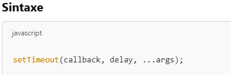
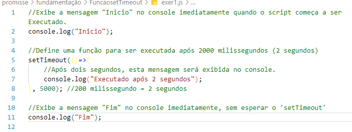

A Função setTimeout em JavaScript é usada para agendar a execução de uma função ou trecho de código após um intervalor de tempo específico (milessegundos).

O
setTimeout retorna um identificador único (
um número). Esse identificador pode ser usado para cancelar a execução programaoda com a função
clearTimeout.
Exemplo básico de setTimeout
